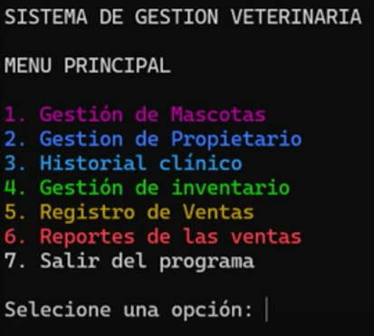
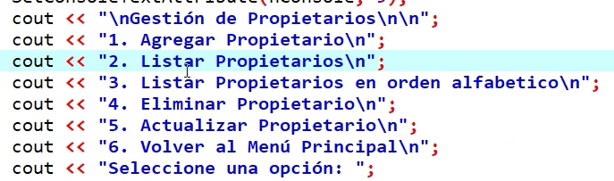

Sistema de gestión veterinaria
Proyecto realizado en C++, implementado en equipo con enfoque en el ciclo CRUD. Ofrece un menú principal con 6 opciones para gestionar citas, pacientes, dueños, inventario, reportes y configuración. Se destaca el uso de estructuras eficientes y una interfaz de texto clara y funcional.

Menú principal con opciones de gestión: citas, pacientes, dueños, inventario, reportes y ajustes.

Pantalla para crear, buscar, actualizar y eliminar citas veterinarias.

Fragmento de código en C++ mostrando funciones CRUD para manejar pacientes.